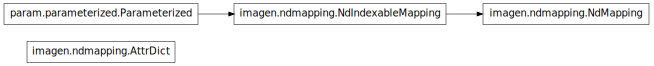

imagen.ndmapping¶

Module¶
- class imagen.ndmapping.AttrDict(*args, **kwargs)[source]¶
Bases: dict
A dictionary type object that supports attribute access (e.g. for IPython tab completion).
- class imagen.ndmapping.NdIndexableMapping(initial_items=None, **kwargs)[source]¶
Bases: param.parameterized.Parameterized
An NdIndexableMapping extends mapping indexing semantics by supporting named indices (labelled dimensions) and by allowing indexing directly into the contained items (data dimensions). Indexing is multi-dimensional, accepting as many key values as there are labelled and data dimensions.
Direct indexing is achieved by passing any indices, in excess of the map dimensions down to the data elements.
Add example
- param Boolean sorted (allow_None=False, bounds=(0, 1), constant=False, default=True, instantiate=False, pickle_default_value=True, precedence=None, readonly=False)
- Determines whether to keep internal data structure sorted. May be important for data, where the order of keys matters.
- param List dimension_labels (bounds=(0, None), constant=True, default=[None], instantiate=True, pickle_default_value=True, precedence=None, readonly=False)
- The dimension_labels parameter accepts a list of the features along which the data will indexed.
- param Dict metadata (allow_None=False, constant=False, default={}, instantiate=True, pickle_default_value=True, precedence=None, readonly=False)
- Additional labels to be associated with the Dataview.
- class imagen.ndmapping.NdMapping(initial_items=None, **kwargs)[source]¶
Bases: imagen.ndmapping.NdIndexableMapping
NdMapping supports the same indexing semantics as NdIndexableMapping but also supports filtering of items using slicing ranges.
- param Boolean sorted (allow_None=False, bounds=(0, 1), constant=False, default=True, instantiate=False, pickle_default_value=True, precedence=None, readonly=False)
- Determines whether to keep internal data structure sorted. May be important for data, where the order of keys matters.
- param List dimension_labels (bounds=(0, None), constant=True, default=[None], instantiate=True, pickle_default_value=True, precedence=None, readonly=False)
- The dimension_labels parameter accepts a list of the features along which the data will indexed.
- param Dict metadata (allow_None=False, constant=False, default={}, instantiate=True, pickle_default_value=True, precedence=None, readonly=False)
- Additional labels to be associated with the Dataview.